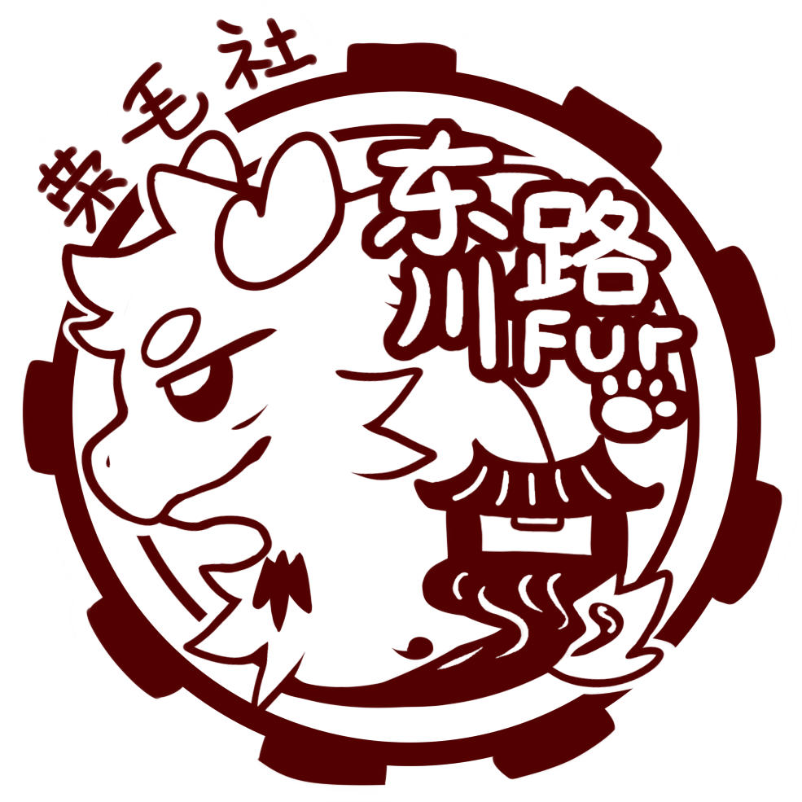

<!--
  导航栏预览副本。
  实际页面会通过 nav.js 注入导航；修改导航时请同步修改 nav.js。
  保留此文件便于直接查看/复制导航结构。
-->
<header class="site-header">
  <nav class="nav" aria-label="主导航">
    <a class="brand" href="index.html" aria-label="返回主页">
      <span class="logo-slot" aria-hidden="true">
        
      </span>
      <span>
        <span class="brand-title">上海交通大学 Furry 同好社</span>
        <span class="brand-subtitle">创作 · 交流 · 聚会</span>
      </span>
    </a>

    <button class="theme-toggle" type="button" data-theme-toggle aria-pressed="false">
      <span class="theme-icon" aria-hidden="true"></span>
      <span data-theme-label>深夜模式</span>
    </button>

    <button class="nav-toggle" type="button" aria-expanded="false" aria-controls="nav-menu">
      <span class="sr-only">打开导航菜单</span>
      <span></span>
      <span></span>
      <span></span>
    </button>

    <ul class="nav-menu" id="nav-menu">
      <li><a data-page-target="index" href="index.html">主页</a></li>
      <li class="has-submenu">
        <button data-page-target="about" type="button" aria-expanded="false">关于我们</button>
        <ul class="submenu">
          <li><a data-page-target="about" href="about.html">社团简介</a></li>
          <li><a data-page-target="mascot" href="mascot.html">吉祥物与 Logo</a></li>
          <li><a data-page-target="members" href="members.html">成员</a></li>
        </ul>
      </li>
      <li><a data-page-target="join" href="join.html">加入我们</a></li>
      <li><a data-page-target="announcements" href="announcements.html">活动动态</a></li>
      <li><a data-page-target="links" href="links.html">外部链接</a></li>
      <li><a data-page-target="gallery" href="gallery.html">多媒体内容</a></li>
    </ul>
  </nav>
</header>
